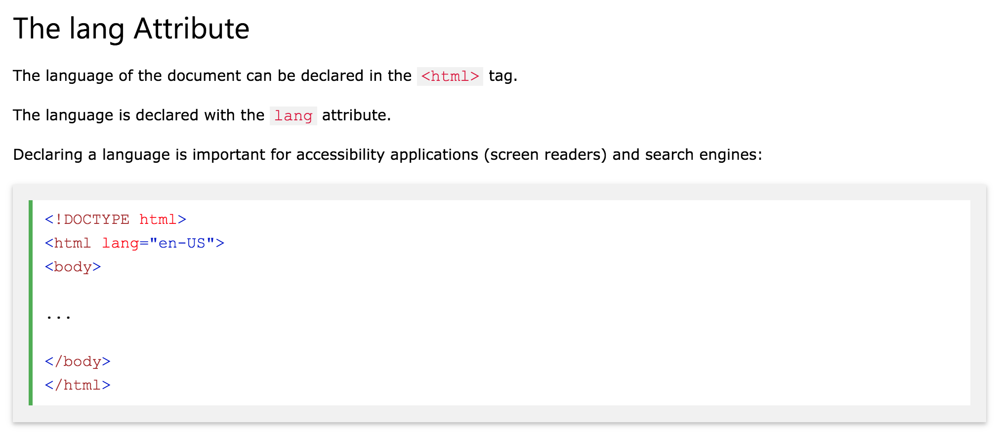

타이틀 태그안에 이름 넣기
메타 태크 Attribute, charset="utf-8"> 이렇게 넣어야 UTF-8방식으로 문서읽기가 가능
모든 태그는 헤드태그와 바디태그안에 들어아게 된다.
헤드와 바디를 묶는 태그는 html이다.
헤딩은 SEO관점에서 엄청 중요하다.
P tag is a paragraph
P태그 안에 스타일을 넣었음
정보로써 더 가치있는 HTML이 되기 위헤선 br태그보다 p태그로 구분하는 것이 좋다.
P태그 Attribute에 style="margin-top:40px;" 이런 것들을 넣어서 단락을 정교하게 구분할 수 있다.
P태그 Attribute에 title="I'm a tooltip" 마우스 오버하면 툴팁. "" 꼭 넣기
b tag means bold브라우저는 b태그와 strong태그를 같게 표헌하고, i태그와 em태그를 비슷하게 표현하지만 의미는 다르다.
strong과 em은 중요하다는 것을 나타낸다.
Sub tag is subscript and sup tag is superscript
del태그를 통한 delete 효과
ins태그를 통한 inserted(added) 효과
pre 태그는 Preformatted Text 의 약자입니다. pre 태그로 감싼 문장은 입력한 문장 형태 그대로 브라우저에 표현할 수 있습니다. 예를 들어 엔터(Enter), 탭(Tab), 스페이스바(Space) 는 pre 를 사용하지 않았을 때 무조건 공백 하나로 인식합니다. 하지만 pre 를 사용하게 되면 HTML 형태 그대로 유지가 가능합니다. 그래서 프로그램 소스를 표현하는데 많이 사용합니다.
q태그를 통한 Quote
효과
blockquote 태그를 통한 답변
For 50 years, WWF has been protecting the future of nature. The world's leading conservation organization, WWF works in 100 countries and is supported by 1.2 million members in the United States and close to 5 million globally.
abbr 태그를 통한 축약: WHO was founded in 1948.
address 태그를 통해 문서의 연락정보 공개, 보통 이탤릭체러 보여지며 대부분의 브라우저에 요소의 앞 뒤에 라인 구분선이 생김The HTML cite element defines the title of a work.
Browsers usually display cite elements in italic.

The Scream by Edvard Munch. Painted in 1893.
목록을 만드는 방법은 세가지 ul태그, ol태그, dl태그
ol태그는 ordered list의 약자로, 숫자나 알파벳 등 순서가 있는 목록을 만드는 데 사용
ul태그는 unordered list의 약자로, 순서가 필요 없는 목록을 만듦
dl태그는 definition list의 약자로, 사전처럼 용어를 설명하는 목록을 만듦
href= URL 쓸때 꼭 " " 해주기
href는 하이퍼 텍스트 레퍼런스
title="tooltip" 을 통해 툴팁 제공
기존창의 바로 전창에다가 링크된 페이지를 연다.
만약에 인터넷창을 3개 열어 두었다고 하면 1, 2, 3 이렇게 열었다고 하면 3번창에서 parent속성의 태그링크를 클릭하면
바로 전에 열었던 2번 창에 페이지가 표시된다.
프레임을 무시하며, 전체 브라주저 창에서) frame name 지정된 프레임 안에 염. 부모 없으면 _self처럼 됨
width 100%
width="500" height="300"
이미지에서 alt는 이미지가 안보일 때 뜨는 Attribute
버튼 Attribute, value에 reset을 넣었다.
버튼 Attribute, value에 submit을 넣었다.
html Attribute가 이렇게나 많다.
Attribute 순서 상관없다.
언어설정
html Attribute, Style을 통해 a태그, p태그, h태그 등의 글씨크기, 글씨색깔, 폰트 등을 정할 수 있다.
html Attribute, Style을 통해 a태그, p태그, h태그 등의 글씨크기, 글씨색깔, 폰트 등을 정할 수 있다.
html Attribute, Style을 통해 a태그, p태그, h태그 등의 글씨크기, 글씨색깔, 폰트 등을 정할 수 있다.
html Attribute, Style을 통해 a태그, p태그, h태그 등의 글씨크기, 글씨색깔, 폰트 등을 정할 수 있다.
CSS stands for Cascading Style Sheets.
CSS는 inline, Internal, External 이 세개의 종류로 되어있다.
inline은 html 엘리먼트의 Attribute에 스타일을 넣는 것이고
internal은 head영역에 style엘리먼트를 넣는 것이고
External은 CSS파일을 새로 만드는 것이다.
대부분은 External을 쓴다.
An external style sheet is used to define the style for many HTML pages.
With an external style sheet, you can change the look of an entire web site, by changing one file!
To use an external style sheet, add a link to it in the head section of the HTML page: